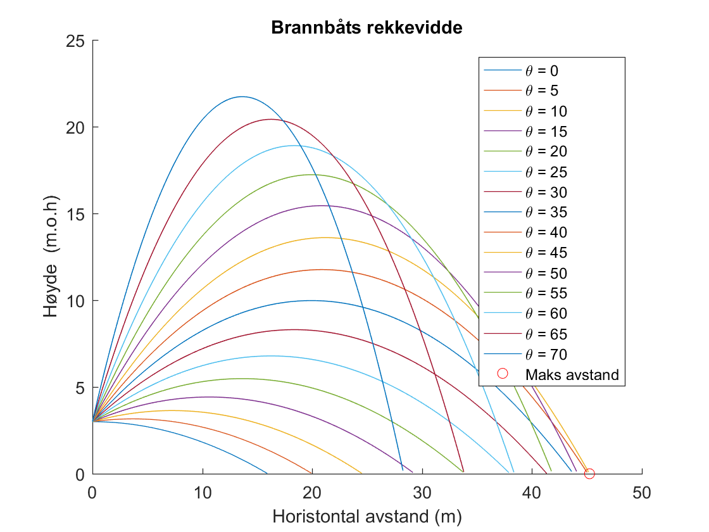

clc;
g = 9.81;
z0 = 3;
u2 = 20.4;
anglesDeg = 0:5:70;
dt = 0.01;
angles = deg2rad(anglesDeg);
x = @(t, theta) u2.*cos(theta).*t;
z = @(t, theta) z0 + u2.*sin(theta).*t - 0.5*g.*t.^2;
t_collide = fsolve(@(t) z(t, angles), repmat(5, size(angles)));
x_max = x(t_collide(anglesDeg==45), angles(anglesDeg==45));
figure;
hold on;
for i = 1:size(angles, 2)
xs = x(0:dt:t_collide(i), angles(i));
zs = z(0:dt:t_collide(i), angles(i));
plot(xs, zs);
t_collide(i);
end
plot(x_max, 0, 'ro');
xlabel('Horistontal avstand (m)');
ylabel('Høyde (m.o.h)');
title('Brannbåts rekkevidde');
legend('\theta = ' + string(anglesDeg), 'Maks avstand');
Equation solved.
fsolve completed because the vector of function values is near zero
as measured by the default value of the function tolerance, and
the problem appears regular as measured by the gradient.
